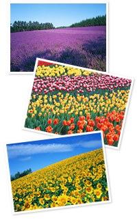

見どころ
ラベンダー平原は、穏やかな起伏をつけた大地に、淡い紫色のグラデーションを構成し、ほのかにラベンダーの香りが漂います。
「ラベンダーには香りの妖精がいて、幸せを運んでくれる」と言われ、古くから多くの人々に愛されてきた香りに包まれると、おのずと心がやさしい気持ちで満たされてきます。
チューリップ庭園は、赤や白、黄色、紫色など、色とりどりの花々の奏でる協奏曲が瞳にも鮮やか。この色味は、いつの世も多くの人々を魅了すると同時に、長かった冬の終わりと暖かな春の訪れを告げ、身も心も弾ませてくれます。
また、花々の間を渡る春風は、頬を優しく撫で、柔らかな心地良さを感じられるでしょう。
ひまわり畑は、青い空と白い雲をバックに鮮やかな黄色が映え、一面に咲き誇るさまは、地平線まで続いているのではないかと錯覚してしまいそうなほど。
お日さまに向かって一直線に伸びる姿が、たくさんの元気を分けてくれます。大地の息吹を胸いっぱいに吸い込めば、新しい１日を始める活力となるはずです。